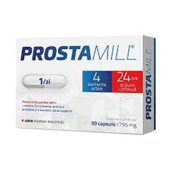

Analiza prostate foloseste urmatoarele teste: 1. Examinarea digitala rectala: Examinarea digitala rectala este un examen fizic al prostatei. Pentru realizarea optima a acestei proceduri, pacientul trebuie sa se aplece peste o masa sau sa stea intins pe o parte in timp ce isi tine genunchii stransi la piept. Apoi, specialistul isi acopera degetul cu o manusa lubrifiata si il introduce in rect pentru a pune presiune pe prostata, astfel incat sa ii verifice forma si textura. Examinarea digitala rectala poate provoca un usor si scurt disconfort. Acest examen are rolul de a scoate la iveala eventualele anomalii ale prostatei. Sanatatea prostatei poate fi mentinuta cu ajutorul produselor alternative, cum ar fi W Prostenal Control, un supliment alimentar care contribuie la mentinerea functiei corecte a prostatei, a tractului urinar si a calitatii vietii sexuale. Prostenal CONTROL combina extracte din plante si nutrienti, al caror impact pozitiv asupra sanatatii prostatei, functiei de excretie si sanatatii generale a barbatilor a fost observat si documentat de-a lungul timpului.
2. PSA (antigenul prostatic specific): Printre primele analize pentru prostata care detecteaza problemele la nivelul acestui organ este o analiza de sange care masoara antigenul prostatic specific (PSA), o proteina produsa numai de prostata. Daca nivelul de PSA din sange depaseste limitele normale, medicul poate suspecta prezenta cancerului de prostata. In prima faza, medicul va recomanda repetarea acestei analize pentru prostata, iar apoi teste suplimentare, printre care si biopsia. Testul PSA intra in randul examenelor fizice de rutina recomandate barbatilor cu varsta peste 50 de ani. Unii specialisti recomanda efectuarea unui test PSA din sange de catre toti barbatii incepand cu varsta de 40 de ani. Nivelul acestor antigeni poate fi influentat de mai multi factori precum varsta, prostata marita, prostatita, mersul pe bicicleta sau anumite tratamente medicamentoase. De aceea, testul PSA nu este concludent si e nevoie de mai multe teste si analize pentru prostata. De asemenea, specialistii recomanda produsele alternative care sustin sanatatea prostatei, cum ar fi ProstaMill, un supliment alimentar care contribuie la ameliorarea simptomelor cauzate de afectiunile acesteia. Daca examinarea rectala sau PSA indica existenta unei probleme, specialistul poate solicita teste suplimentare, cum ar fi analize de urina, teste urodinamice, cistoscopie, ecografie abdominala, ecografie prostatica transrectala si studii imagistice, cum ar fi rezonanta magnetica (RMN) sau tomografia computerizata (CT).
3. Urocultura: Aceasta analiza de urina descopera infectiile urinare. Urocultura poate depista o infectie localizata la nivelul prostatei. 4. Teste urodinamice: Testele urodinamice analizeaza care cat de bine depoziteaza si elimina urina vezica urinara. Aceste teste sunt recomandate daca problemele glandei prostate sunt asociate cu un blocaj al urinei sau cu alte simptome neplacute care pot aparea in timpul urinarii. 5. Cistoscopia: Cistoscopia permite descoperirea blocajelor in partea inferioara a tractului urinar. Un instrument denumit cistoscop este introdus in uretra si vezica urinara prin penis, astfel incat sa depisteze locul in care urina se blocheaza. Aceasta procedura se realizeaza cu anestezie locala sau generala, in functie de preferintele medicului si/sau ale pacientului. 6. Ecografia abdominala: Ecografia este o metoda de diagnosticare total nedureroasa care poate releva imagini cu intregul tract urinar. In acest fel, specialistul poate identifica eventualele anomalii la nivelul tractului urinar, cauzate de un blocaj al urinei din cauza prostatei. 7. Ecografia prostatica transrectala: Ecografia prostatica transrectala, in schimb, poate permite observarea in detaliu a prostatei. Acest tip de ecografie poate evidentia leziunile minore, excrescentele si alte anomalii care pot aparea la nivelul prostatei. 8. RMN (rezonanta magentica) si CT (tomografie computerizata): Rezonanta magnetica si tomografia computerizata sunt realizate daca specialistul suspecteaza prezenta cancerului de prostata sau daca pacientului i-a fost pus deja acest diagnostic si se urmareste evolutia acestei afectiuni.